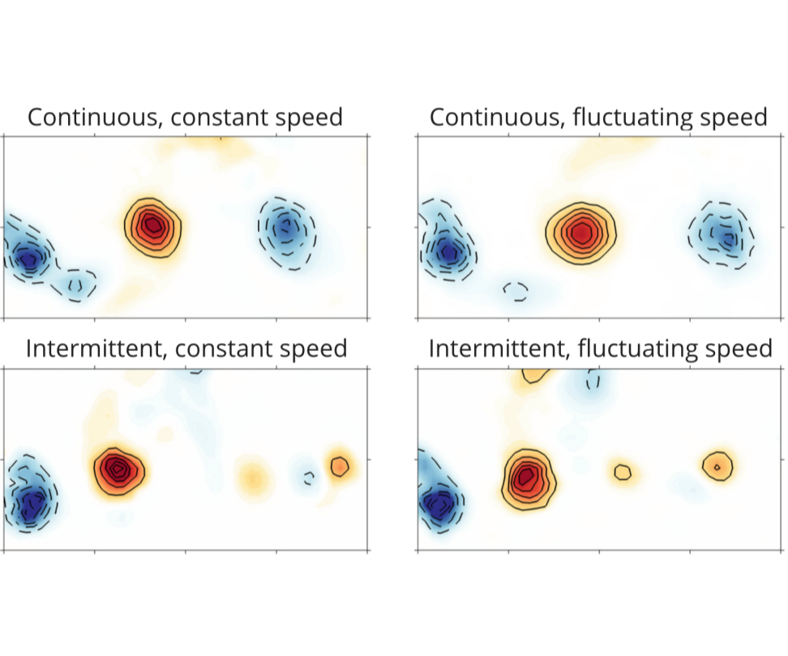

 Flow speed has little impact on propulsive characteristics of oscillating foils
Flow speed has little impact on propulsive characteristics of oscillating foils
T. Van Buren, D. Floryan, N. Wei, and A. J. Smits, Physical Review Fluids (2018), 3(1), 013103
doi: 10.1103/PhysRevFluids.3.013103
arXiv: 1707.05608
Quickly:
According to conventional wisdom, swimming speed should greatly impact the forces and power of swimmers (since dynamic pressure depends quadratically on fluid speed). Surprisingly, we find that flow speed (mean and instantaneous) in fact has little impact on the propulsive performance and wake of swimmers, for many types of motions. Consequently, fixed-speed studies can be used to make robust conclusions about free-swimming. The two columns in the image are nearly identical, even though one has significant oscillations in flow speed.
Abstract:
Experiments are reported on the performance of a pitching and heaving two-dimensional foil in a water channel in either continuous or intermittent motion. We find that the thrust and power are independent of the mean freestream velocity for two-fold changes in the mean velocity (four-fold in the dynamic pressure), and for oscillations in the velocity up to 38% of the mean, where the oscillations are intended to mimic those of freely swimming motions where the thrust varies during the flapping cycle. We demonstrate that the correct velocity scale is not the flow velocity but the mean velocity of the trailing edge. We also find little or no impact of streamwise velocity change on the wake characteristics such as vortex organization, vortex strength, and time-averaged velocity profile development&emdash;the wake is both qualitatively and quantitatively unchanged. Our results suggest that constant velocity studies can be used to make robust conclusions about swimming performance without a need to explore the free-swimming condition.